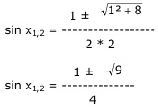
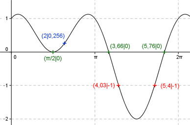
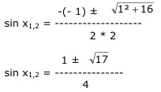

Aufgabe 229 Ergänzen Sie die Wertetabelle für x zwischen 0 und 2π: y = sin x + cos2x x 2 4,03 oder 5,4 y 0,256 -1 Amplitude = -2 (Berechnung siehe unten), Periode = 2π Berechnung der Nullstellen: sin x + cos 2x = 0 mit cos2x = 1 - 2 sin2 x sin x + (1 - 2 sin2 x) = 0 sin x + 1 - 2 sin2 x = 0 |*(-1) 2 sin2 x - sin x - 1 = 0 A, B, C - Formel: A = 2 ; B = -1 ; C = -1  1 ± 3 sin x1,2 = --------- 4 sin x1 = 1 --> x1 = arc sin 1 = π/2 sin x2 = -0,5 --> x2 = arc sin -0,5 = -0,52, liegt nicht im Bereich zwischen 0 und 2π. x1 = π/2 oder 90°, x2 = (π + 0,52) = 3,66 oder 210°. x3 = (2π - 0,52) = 5,76 oder 330°.  Funktionswert an einer Stelle x ermitteln: x = 2 f(2) = sin 2 + cos (2 * 2) = = sin 114,6° + cos (2 * 114,6°) = 0,256 gerundet Berechnung der Amplitude A: 5,4 - 4,03 Sie tritt an der Stelle x = 4,03 + (------------) = 2 = 4,715 oder 270° auf. Amplitude = f(270°) = A = |sin 270° + cos 2 * 270°| = |-1 + (-1)| = 2 Berechnung der x-Werte für y = f(x) = -1 fx = -1 eingesetzt, existiert zweimal zwischen π und 2π bzw. 180° und 360° (siehe Graph). sin x + cos 2x = - 1 mit cos 2x = 1 - 2 sin2 x sin x + (1 - 2 sin2 x) = -1 sin x + 1 - 2 sin2 x = - 1 |*(-1) 2 sin2 x - sin x - 1 = 1 |-1 2 sin2 x - sin x - 2 = 0 A, B, C - Formel: A = 2 ; B = -1 ; C = -2  sin x1 = -0,78 --> x1 = arc sin - 0,78 = -0,89 gerundet, liegt nicht im Bereich zwischen 0 und 2π.. sin x2 = 1,28 --> keine Lösung x1 = (π + 0,89) = 4,03 gerundet oder 231° x2 = (2π - 0,89) = 5,4 oder 309° gerundet.